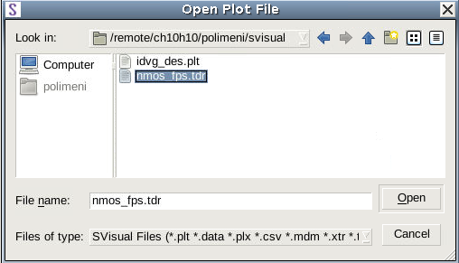
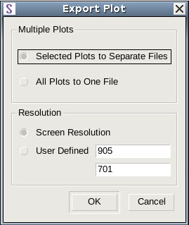
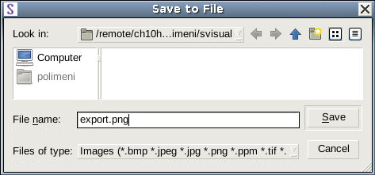
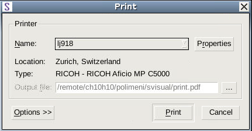
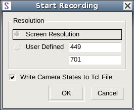
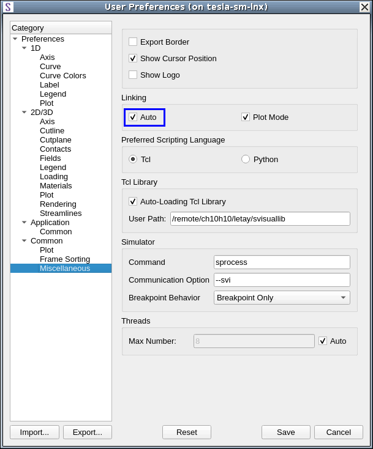

main menu
| module menu
| << previous section
| next section >>
main menu
| module menu
| << previous section
| next section >>
Sentaurus Visual
1. Getting Started
1.1 Overview
1.2 Starting Sentaurus Visual
1.3 Loading Data Files
1.4 Reloading Data
1.5 Exporting and Printing Plots, Creating Movies, and Saving Tcl or Python
Commands to File
1.6 Hiding, Maximizing, and Deleting Plots
1.7 Managing Data
1.8 User Preferences
Objectives
- To introduce the basic operations of Sentaurus Visual.
1.1 Overview
Sentaurus Visual is advanced visualization software developed by Synopsys based on the Visualization Toolkit.
Sentaurus Visual is used to visualize results created by TCAD simulation tools in one, two, and three dimensions. To assist in better understanding of physical processes captured in simulations, Sentaurus Visual provides tools to probe data fields, to make cutlines and cutplanes, to perform analysis on data fields, and to export data in ASCII format for further analysis by third-party software. It is also equipped with tools to conveniently overlay structures, to look at the solution differences, to inspect band diagrams, and more.
1.2 Starting Sentaurus Visual
Sentaurus Visual can be run in either Tcl mode or Python mode. Sentaurus Visual can be started from the command line:
> svisual &
Alternatively, to launch Sentaurus Visual from Sentaurus Workbench:
- Choose Extensions > Run Sentaurus Visual.
Sentaurus Visual starts in the mode set in user preferences as discussed in Section 1.8 User Preferences.
1.3 Loading Data Files
In TCAD Sentaurus, two file types are most commonly used in visualization and can be loaded into Sentaurus Visual:
- Files with the *.tdr extension describe a device structure, its mesh, and data fields stored on the mesh.
- Files with the *.plt extension store terminal characteristics produced by the device simulator. The *.plt files are used to create I–V curve plots, also referred to as xy plots.
To follow this module, download the following files by right-clicking and selecting Save Target As:
To start Sentaurus Visual and simultaneously load data files, include the file names on the command line:
> svisual nmos_fps.tdr
To include multiple data files on the command line, separate the names with space:
> svisual nmos_fps.tdr pmos1_fps.tdr pmos2_fps.tdr
To load data files from the user interface of Sentaurus Visual:
- Choose File > Open, or press Ctrl+O, or click the
toolbar button.
The Open Plot File dialog box opens. By default, this dialog box lists all standard files relevant to Synopsys TCAD visualization, including *.tdr and .plt files.

- Load a particular file by selecting it from the list.
To load multiple data files, hold the Ctrl key while selecting files. - Click Open.
1.3.1 Device Structures
When a file is loaded, the device is shown in the plot area. Figure 1 shows the result after loading the file nmos_fps.tdr.
{kind=link}
Figure 1. NMOS structure showing doping profile distribution. (Click image for full-size view.)
In subsequent sections, you will learn how to control the view, to display materials and regions, and to select data fields and field ranges.
1.3.2 XY Plots
Sentaurus Visual behaves differently when loading xy data files. It displays panels and toolbars for creating and editing xy plots. Upon loading xy data, Sentaurus Visual creates an empty frame for the xy plot. Since a typical xy data file contains multiple columns of data, you must specify manually which data variable will be plotted against which axis.
Figure 2 shows the plot area with panels and toolbars related to xy plots as well as an empty frame created after loading the xy data file idvg_des.plt.
{kind=link}
Figure 2. Panels and toolbars related to xy plots after loading idvg_des.plt. (Click image for full-size view.)
1.4 Reloading Data
Sentaurus Visual allows you to reload datasets from the same file after they have been loaded into the frames, and the plots have been created. This allows you to update the plot with any changes made to the file outside of Sentaurus Visual. You can choose to reload a selected dataset or all datasets.
To reload data, either:
- Choose File > Reload All.
- Choose File > Reload Selected.
1.5 Exporting and Printing Plots, Creating Movies, and Saving Tcl or Python Commands to File
This section discusses how to export plots to a graphics file, to print plots, to create movies, and to save Tcl or Python commands to a file.
1.5.1 Exporting Plots
To export a plot into a graphics file from the user interface of Sentaurus Visual:
- Choose File > Export Plot, or press Ctrl+E, or click
the
 toolbar button.
toolbar button.
The Export Plot dialog box opens.

- Select the plot resolution and how multiple plots should be exported.
- Click OK.
The Save to File dialog box opens.

- Specify a file name and select the file format to use, such as BMP, EPS, or PNG.
The file format is determined from the file extension. - Click Save.
1.5.2 Printing Plots
To print a plot directly to a printer from the user interface:
- Choose File > Print Plots, or press Ctrl+P, or click the
toolbar button.
The Print dialog box opens.

- Select the printer or send output to a PDF file, and specify the printing options.
- Click Print.
1.5.3 Creating Movies
To create a movie from several plots:
- Choose Tools > Movies > Start Recording,
or click the
toolbar button.
The Start Recording dialog box opens.

- Select either Screen Resolution or a user-defined resolution.
- Click OK.
Then, select the plot to be added as a frame to the movie and perform the following:
- Choose Tools > Movies > Add Frames, or click the toolbar button.
- Repeat Step 1 for each frame to be added to the movie.
When all the frames are created, you can stop recording the movie as follows:
- Choose Tools > Movies > Stop Recording,
or click the toolbar button.
The Export Movie dialog box opens.
- Select and sort frames to be exported.
The frame duration (in 1/100 s) can be changed. - Click OK.
A dialog box opens where the location for saving the movie as well as its name can be entered.
{kind=link}
1.5.4 Saving Tcl or Python Commands to File
When you work on a plot, Sentaurus Visual records the equivalent Tcl or Python commands for all the steps performed in the user interface. This command journal can be used later to recreate the same state of the plot. In the Tcl or Python Console, click Save to save the current set of Tcl or Python commands to a file.
{kind=link}
Figure 3. Tcl Console. (Click image for full-size view.)
The Tcl or Python command file produced by Sentaurus Visual does not contain data files, but rather links to the data files that were used during plot creation. Therefore, all TDR or PLT files must be present on the file system to recreate the same plot with the saved command file.
You can enter commands at the command prompt in the Console. The Tcl Console has the prompt %; whereas, the Python Console has the prompt >>>.
1.6 Hiding, Maximizing, and Deleting Plots
In Sentaurus Visual, the selected plot is marked by a thick border. To hide the selected plot:
- Choose Window > Minimize Plot or click the
 toolbar button.
toolbar button.
To display a hidden plot, choose Window and then select the plot name in the lower part of the menu list. All plots that are currently hidden do not display a check mark next to their name. Click the plot name to restore it.
To maximize a plot:
- Choose Window > Maximize, or press the F10 key, or click the toolbar button.
To delete a selected plot:
- Choose Edit > Delete Selected Plots, or press Ctrl+D.
1.7 Managing Data
Deleting a plot does not remove the dataset.
To remove the dataset:
- Choose Data > View Info Loaded.
The Manage Loaded Data dialog box opens, where you can manage data loaded in the current session (see Figure 4).
The Files pane lists all the loaded files. The Datasets pane lists all the loaded datasets. The Plots pane shows the plot name and the corresponding dimensionality is shown in the Dimension pane. The data in all columns is connected, allowing you to easily find the dataset to be deleted or reloaded.
The Manage Loaded Data dialog box has two Remove buttons. The button on the right deletes the plot and the button on the left deletes the dataset.
{kind=link}
Figure 4. Manage Loaded Data dialog box can be used to inspect, reload, and delete datasets in Sentaurus Visual. (Click image for full-size view.)
1.8 User Preferences
The settings of Sentaurus Visual can be customized in the User Preferences dialog box (see Figure 5). You can set the appearance of the labels and legends, rendering options for 3D plots, and so on. To display the User Preferences dialog box:
- Choose Edit > Preferences.

Figure 5. Customizing automatic plot linking upon loading in User Preferences dialog box.
To better explain the tool customization process, as an example, here are instructions for customizing the linking behavior of loaded plots. To set properties:
- Choose Edit > Preferences.
- In the User Preferences dialog box, navigate to Common > Miscellaneous.
- Select the Auto option.
- Click Save.
With the Auto option selected, Sentaurus Visual automatically links plots of the same dimension, that is, all 2D plots are linked into one group upon loading, and all 3D plots are linked into one group upon loading.
User preferences settings are applied the next time you launch Sentaurus Visual.
You can set a preferred scripting language in user preferences as follows:
- Choose Edit > Preferences.
- In the User Preferences dialog box, navigate to Common > Miscellaneous.
- Under Preferred Scripting Language, select the required language.
- Click Save.
With the Python option selected, Sentaurus Visual starts in Python mode the next time you launch it.
main menu | module menu | << previous section | next section >>
Copyright © 2022 Synopsys, Inc. All rights reserved.